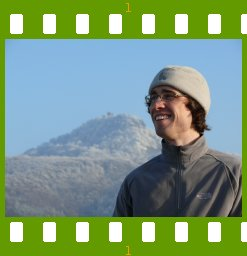

People of openSUSE: Lukáš Ocilka

Here you have an interview with Lukáš Ocilka, a Czech YaST developer maintaining many YaST components such as Installation, Firewall, and Backup.
- Nickname: It’s “kobliha” which can be translated as a “fried cake” because I’m so sweet, heh ;)
- Homepage: http://en.opensuse.org/User:Locilka
- Blog: Frankly, it seems that openSUSE wiki is my blog.
- Favorite season: Spring, summer, autumn, and winter :) Every season offers me so many opportunities to be the chosen one. On the other hand, I can always find several reasons for it to be the most-hated one too ;)
- Motto: I’m afraid I don’t have any.
Please introduce yourself!
Is was born in 1980, Prague, Czechoslovakia. Still single (but I have a girlfriend) :) , no children, no pets, currently working as a YaST developer in SUSE Linux – Prague.
Tell us about the background to your computer use.
First time a saw a “PC” was in 1991 when a friend on mine showed my a game called “Stunts”. We must have had a computer lessons on a high school but I don’t remember much till 1996 when our family got a PC “Gateway” from our uncle. Since that time I’ve been interested in breaking and fixing the “current” OS and applications.
There were several OS’s that I’ve got through starting with MS-DOS 6.22, Windows 3.11, 95, 98, 2000, NT, ME, XP, IRIX, Mac OS and some strange system called Linux ;) It must have been at university when I found out that the right way that fits my needs was Slackware Linux installed by a friend. I’ve switched to SuSE Linux in 2001 when I started working as an IT administrator and a web-developer in SuSE. It might have been in version 7.2.
Actually, I think that programming must be in my blood because my mother was a software developer in Tesla Liberec in 80’s :)
When and why did you start using openSUSE/SUSE Linux?
As I already said – 2001, just because of my employer.
When did you join the openSUSE community and what made you do that?
Well, I think it was a little while after it started, just as the majority of SUSE in-house developers.
In what way do you participate in the openSUSE project?
Mostly blogging ;)
There are several types of contributions but as a YaST developer, I’m expected to develop YaST :) Additionally, I’m responsible for the YaST documentation (rather for taking pieces written by others and putting them together). I’ve also written several articles to the openSUSE wiki, I often contribute to yast-devel and other open mailing-lists.
Sometimes you can see some of my new designs or ideas of others brought to life. There are several ideas that lie on the streets, that’s also why I read several mailing-lists, wish-lists, etc. We just need to listen to people and their needs carefully.
What especially motivates you to participate in the openSUSE project?
YaST development is open so I would contribute just only by developing it. On the other hand openSUSE isn’t just about developing software. It’s also about sharing ideas, experience, learning from others…
What do you think was your most important contribution to the openSUSE project/community or what is the contribution that you’re most proud of?
I’m currently responsible (not only) for the installation framework which also involves one of the important features of 10.3 – Community Repositories. But I’m also proud of reporting and fixing bugs, etc., proud of being an openSUSE community member ;)
When do you usually spend time on the openSUSE project?
Majority of my time at work, some evenings or weekends at home, thinking about solving issues or features when traveling, having a shower, …
Three words to describe openSUSE? Or make up a proper slogan!
Well that would be very hard. openSUSE serve to many different people with different needs but even if they need to be able to do different tasks, openSUSE is almost always able to fulfill their needs. Maybe “[Do] whatever you want” might work ;)
What do you think is missing or underrated in the distribution or the project?
UI unification, Wizards and Tutorials.
What do you think the future holds for the openSUSE project?
Open platform for all solutions. Easily extensible, modular. Focused on cooperation with other computers or other electronic devices regardless of their operating systems.
A person asks you why he/she should choose openSUSE instead of other distribution/OS. What would be your arguments to convince him/her to pick up openSUSE?
I don’t like convincing people to do what they don’t like so first I’d make them like openSUSE :)
Which members of the openSUSE community have you met in person?
As a Novell/SUSE employee probably most of the in-house ones and also some external contributors, such as Benjamin Weber or Francis Giannaros.
How many icons are currently on your desktop?
I was writing this on a paper sitting in a bus to my parent’s but now .. [counting icons on my father’s XP desktop] … thirteen ;)
What is the application you can’t live without? And why?
I don’t think there is such an application. I think that I could even live without computer. Anyway, my use of applications is task-related: I want to read and write mails, browse the internet, edit some source code, and compile, of course. It doesn’t matter so much how an application looks like, who wrote it or why. I just need it to do these tasks :) Of course, I have some favorite ones which I’m used to ;)
Which application or feature should be invented as soon as possible?
I’ll tell you if I find some :)
Which is your preferred text editor? And why?
mcedit and pico, just as a matter of sentimentality :)
Which famous person would you want to join the openSUSE community?
I have no idols, so even if we define a “famous person” as a “well-known person”, I still wouldn’t care :) There are other qualities that I respect more than “being famous”. I’d like people joined the openSUSE community because the community offered them a good system, applications and support and then also to help the community grow.
Which computer related skills would you like to have?
Ah, you’ve got me :) I’d like to understand C/C++.
The Internet crashes for a whole week. How would you feel, what would you do?
It’s almost impossible because I have one connection at work and another at home. If the whole internet crashed, well, that wouldn’t be good for anybody but I hope it wouldn’t be an Apocalypse :)
Anyway, if it was at home and I couldn’t/didn’t need to go to work, I’d spend a nice week traveling and visiting interesting places.
Which is your favorite movie scene?
Almost all the Love Actually movie :)
Star Trek or Star Wars?
Argh, Futurama! :-P
What is your favorite food and drink?
Whatever tastes good and doesn’t make me sick later :)
Favorite game or console (in your childhood and nowadays)?
When I was younger … DOOM II, Stunts, Transport Tycoon, Master of Magic but I don’t play any games anymore.
Which city would you like to visit?
Wien /Vienna/ (this week), Roma /Rome/.
What is your preferred way to spend your vacation?
With my friends. On the mountains, near the sea. Anything new sounds good as well as the places I already visited (and liked).
Someone gives you $1.000.000. What would you do with the money?
At first, I’d probably talk to several different people that have some experience with bigger amounts of money, then I’d probably invest them. Maybe I’d try to run some small business on my own, maybe I’d buy some shares, a flat… Of course, I would also buy some presents for my family :)
If traveling through time was possible, when would we be most likely to meet you?
Just now.
There’s a thunderstorm outside. Do you turn off your computer?
Depends on the strength of that thunderstorm :) But considering the past, I don’t remember shutting down my computer because of a heavy rain or lightening-storm because I believed my UPS would protect it. I always turn off my computer when I don’t need it running anymore.
Have your ever missed an appointment because you forgot about it while sitting at your computer?
Yes, if an English lesson counts ;)
Show us a picture of something, you have always wanted to share!
Have you ever seen YaST :) ?
You couldn’t live without…
Well, you know, those things your body needs (water, oxygen, food, …).
Which question was the hardest to answer?
All of the above :) Maybe that “Which application or feature should be invented as soon as possible?”, I was unable to find any.
What other question would you like to answer? And what would you answer?
Will you contribute to openSUSE in the future :)? Definitely :) !